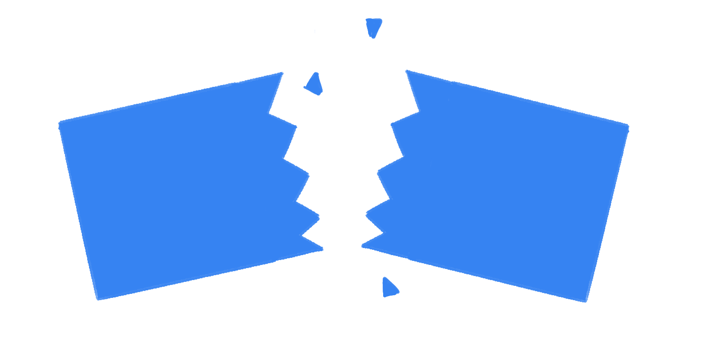
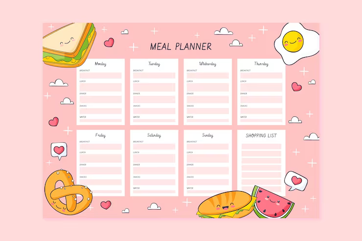
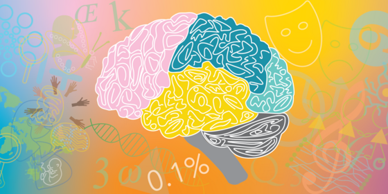
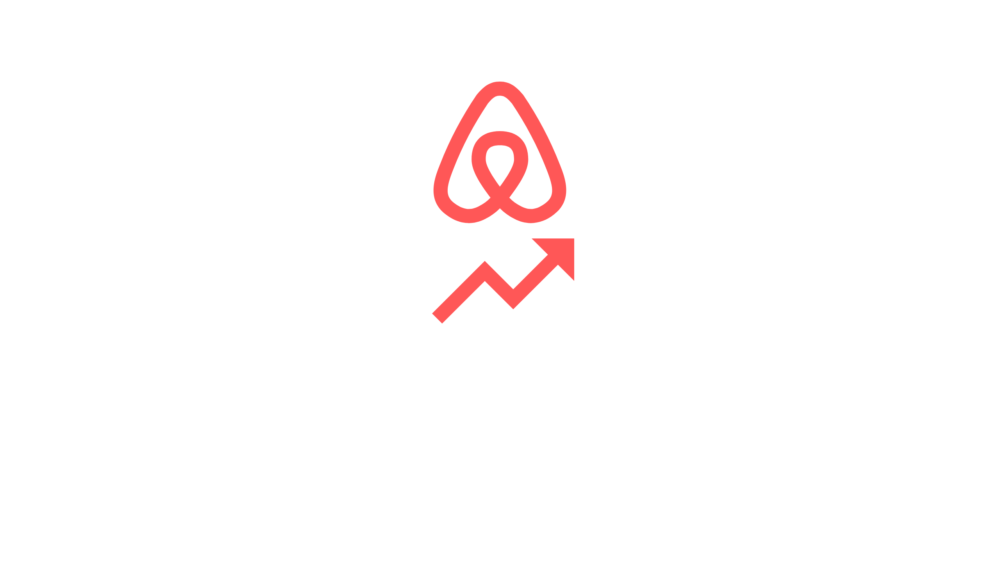

Helloooo 👋,
Xinyue here :)
software engineer + creator

I'm a Senior @ Stony Brook University pursuing a Bachelor degree in Computer Science and Applied Math & Statistics under honors college .
I focus on deep-learning / time-series research, specifically anomaly detection and forecasting. My recent paper on forecasting lithium-ion battery's remaining usage life is accepted to the KDD Mining and Learning from Time Series (MILETS ’26) Workshop.
I also enjoy building useful apps that solves everyday problems, I have built bill splitter, AI meal planner, and pomodoro in the past which can be found in my Project section.
A fun fact about me is I was once a Division II swimmer in China, training under one of Olympian Sun Yang's coaches. While I no longer compete professionally, I enjoy spending time outdoor through running, swimming, and hiking. I also love doing hands-on projects including pottery, upcycling, and knitting when time allows.

A full-stack mobile application that simplifies splitting party bills, integrating the Google Gemini API to provide intelligent assistance and automation.
React Native, Express.js, Node.js, MongoDB Google Gemini API, JWT

An AI meal planning assistant that recommends you recipies based on your input.
React, FastAPI, Qdrant, Redis, OpenAI API

A neural network model that predict ADHD and sex classification based on neuroimaging data. Ranked top 0.03% on Kaggle and #1 across Breakthrough Tech’s Cornell, MIT, and UCLA.
Numpy, Pandas, Tensorflow, Neural Networks

ML model predicting NY Airbnb price based on historical datas
ScikitLearn, Panda, Numpy, Seaborn
A desktop study buddy pomodoro with engaging reward system
C#, Unity